DISTRIBUTED PRIORITY QUEUE
Ryuk
Priority 0–100, strict ordering within a group, at-least-once delivery.
Two queue types: one machine for exact order, or slots spread across the cluster.
Rendezvous placement — no coordinator, nothing elected
Write-ahead log per slot; a restarted node replays and rejoins
Nodes register themselves — adding one rebalances the work onto it
PART 1
The queue list
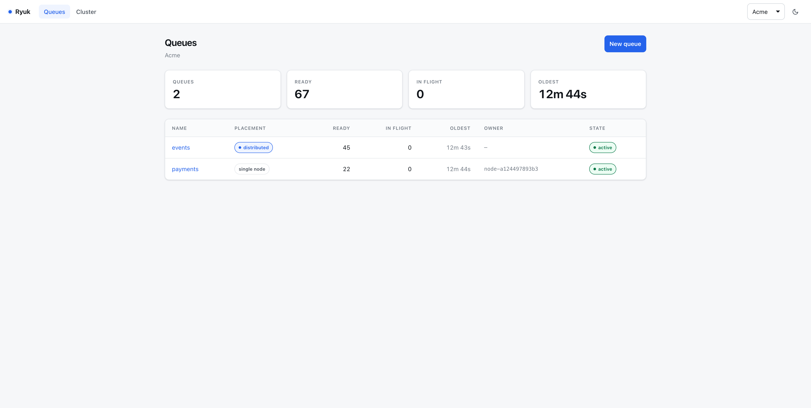
QUEUESDepth, in-flight, oldest age, owner and placement type — per org, at a glance
PART 2
Create, then send four
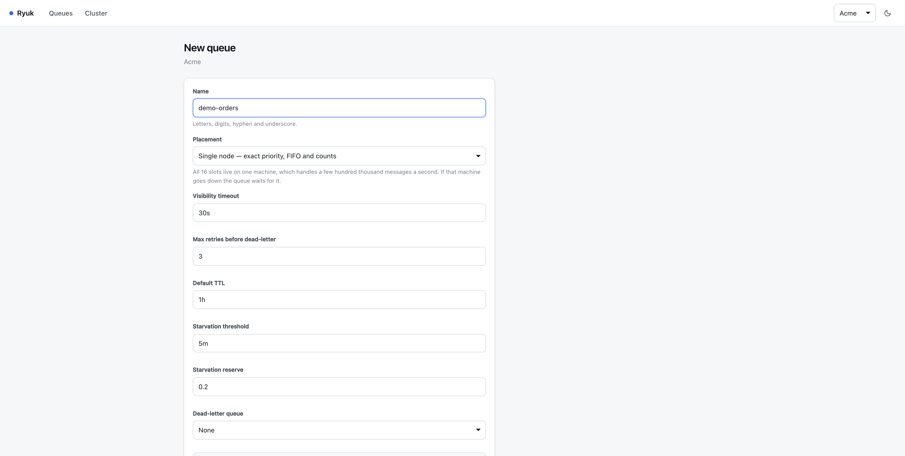
NEW QUEUEA name, and one placement choice: single node for exact ordering, or spread across the cluster
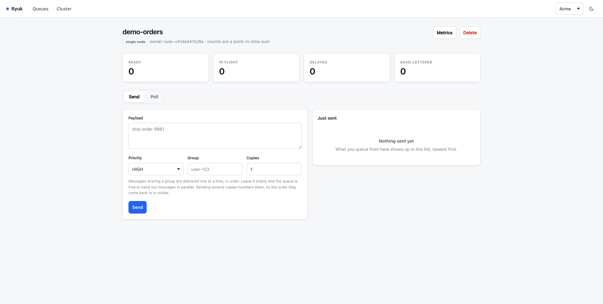
EMPTYCreated and placed on a node. Nothing ready, nothing in flight
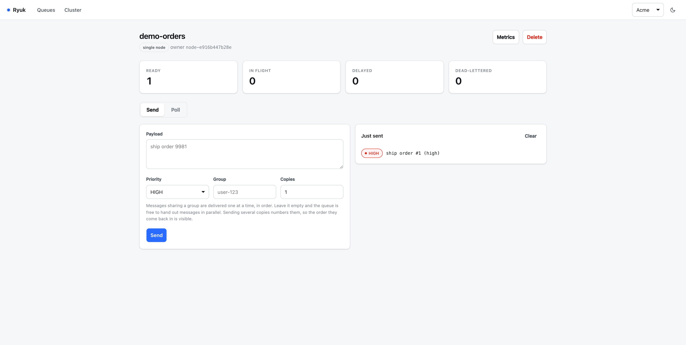
SENDFirst message in at HIGH — what was queued appears beside the form
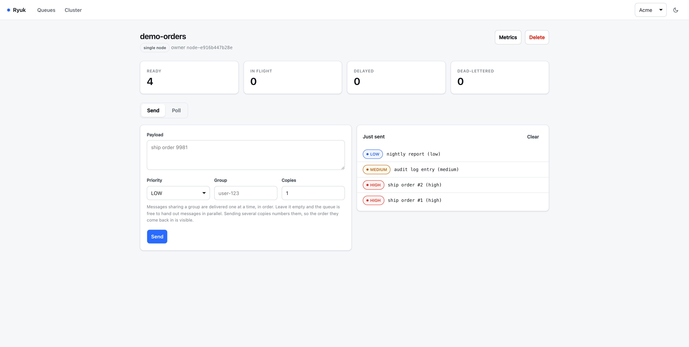
FOUR INTwo HIGH, one MEDIUM, one LOW. Ready reads 4; the feed lists them newest first
PART 3
Poll, acknowledge, nack
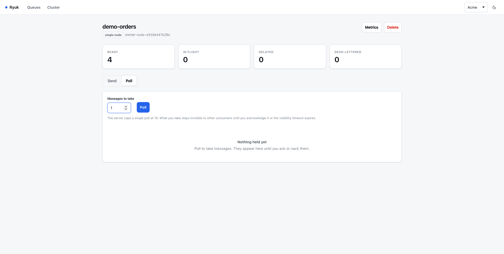
ONE AT A TIMETaking a single message per poll, so the order the queue hands them out is visible
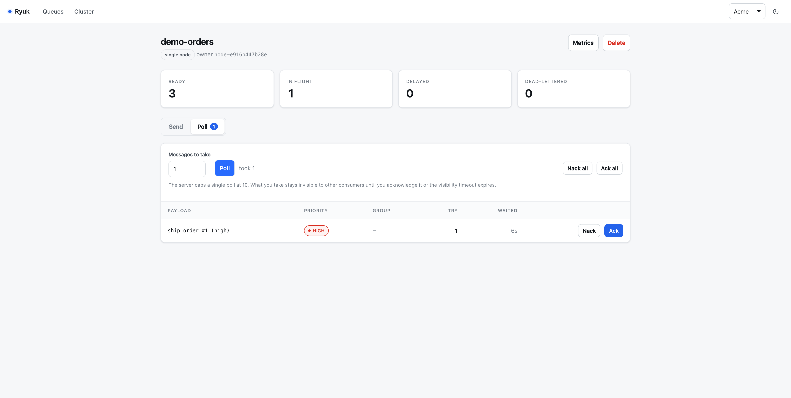
HIGH FIRSTReady 4 → 3, in flight 1. The first HIGH comes out, attempt 1
ACKIn flight back to 0 and ready stays at 3 — acknowledged means gone, not returned
SECOND HIGHReady 3 → 2. Both HIGH messages come out before anything else

NACKReady climbs back to 3 — a nack returns the message to the queue instead of consuming it
REDELIVEREDThe same message, now attempt 2. Retries are counted, and enough of them send it to the dead-letter queue
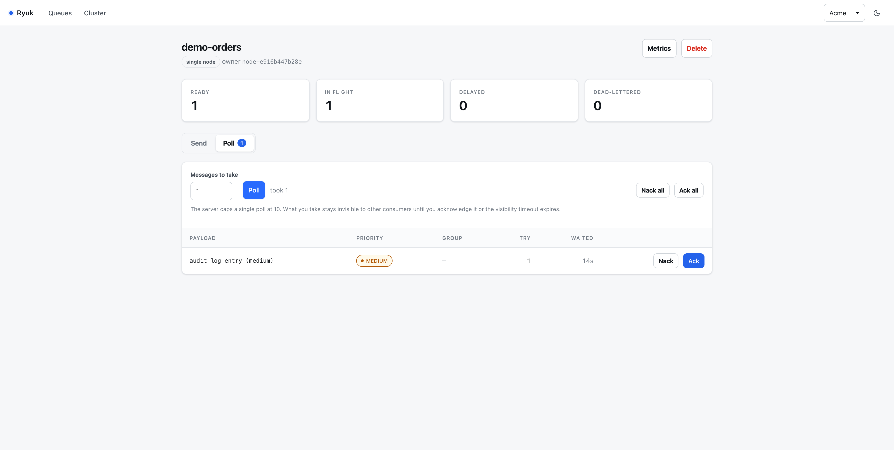
THEN MEDIUMOnly once both HIGH messages are done does MEDIUM get its turn
THEN LOWLOW last, exactly as submitted — strict priority, FIFO inside each band
DRAINEDReady 0, in flight 0. Four in, four out, one of them twice because it was nacked
PART 4
Metrics
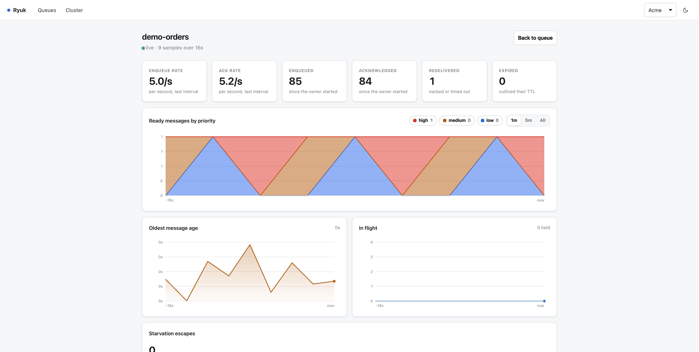
THROUGHPUTEnqueue and acknowledge rates, worked out by the gateway from the change between two collections — a node reports only totals
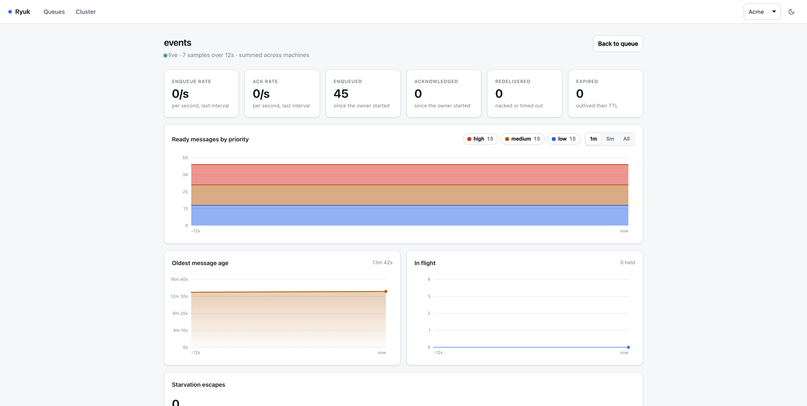
DEPTH BY PRIORITYStacked bands over a rolling window, summed across every machine holding a slot
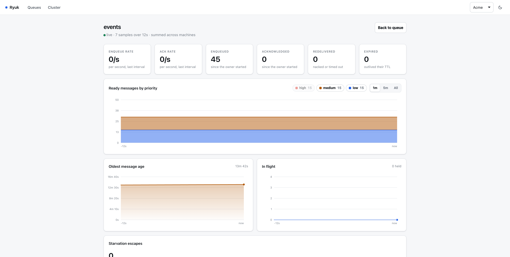
FILTERHiding a band rescales the axis, so a small series is not flattened by a large one
PART 5
The cluster
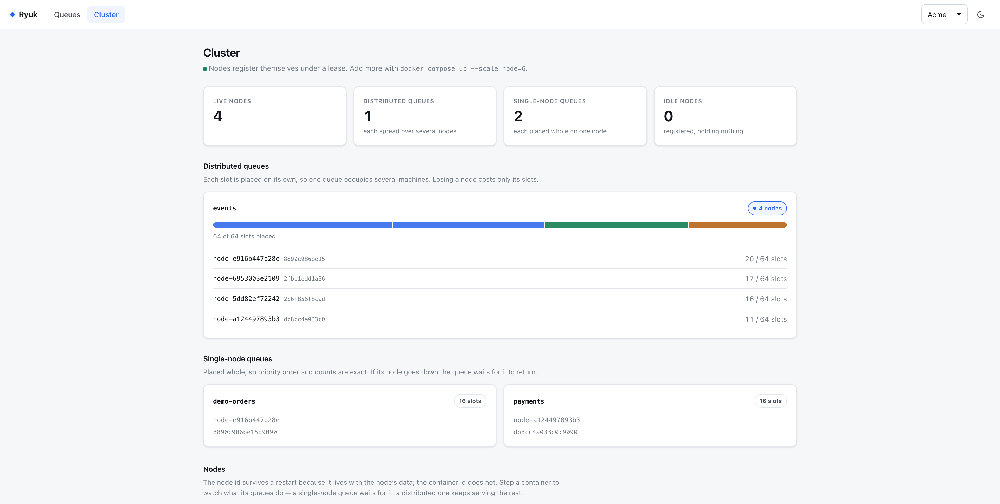
PLACEMENTA distributed queue’s slots spread over every node; a single-node queue is placed whole
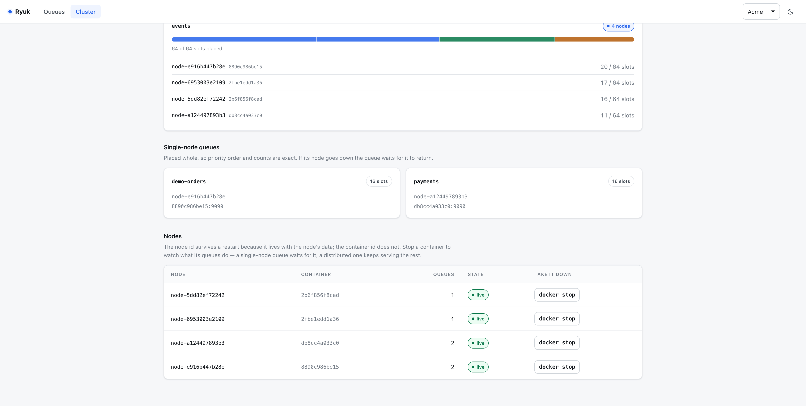
STOP ONEEach node shows its container id, so a failure can be triggered by hand and watched
PART 6
Tenancy and theme
ANOTHER ORGThe org comes from the credential, never the URL — Globex sees none of Acme’s queues
DARKLight and dark, remembered per browser
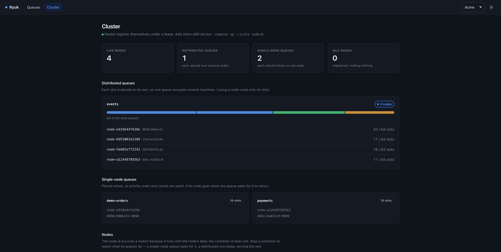
SAME DATANothing is redrawn for a theme; the charts and tables read the same palette
UNDER THE HOOD
One engine, two placement strategies
Priority bitmap — highest non-empty band in constant time, whatever the depth
Group locking — one message per group in flight, so order survives concurrency
Starvation reserve — low priority still moves while urgent work saturates
Lease epochs — a late acknowledgment cannot delete someone else's message
Freeze, ship, absorb — rebalancing without losing a message or its order
Go · gRPC · PostgreSQL · etcd · Next.js · Docker